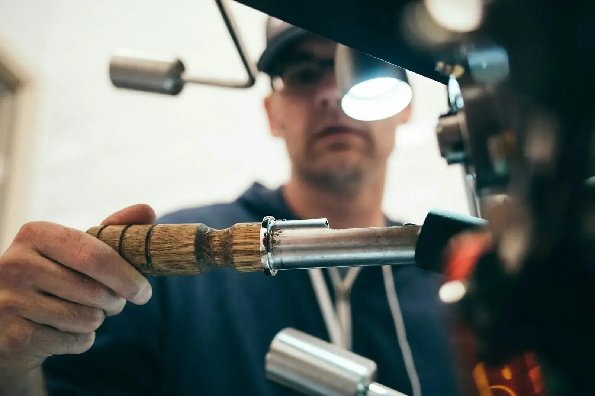
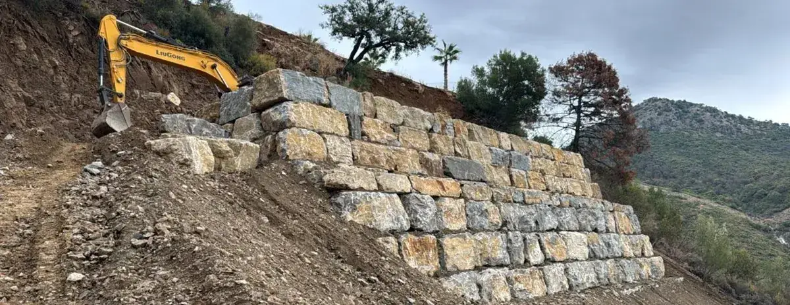
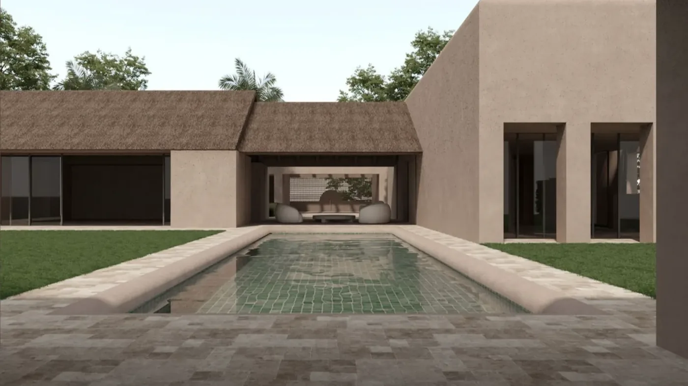

Seleccionamos cuidadosamente cada material para garantizar el máximo rendimiento energético, la sostenibilidad medioambiental y la durabilidad de tu hogar durante generaciones.
Todos nuestros materiales cuentan con certificaciones internacionales que avalan su respeto al medioambiente, su baja emisión de CO₂ y su contribución a la salud de los ocupantes.


Nuestras viviendas están diseñadas bajo los estándares más exigentes de eficiencia energética, combinando el aislamiento pasivo con la generación activa de energía renovable.
Certificación nZEB: consumo energético casi nulo conforme a la directiva europea.
Calificación A+: la más alta clasificación energética en España.
Ahorro hasta 90%: en factura eléctrica respecto a una vivienda convencional.
Huella de carbono mínima: construcción y uso con impacto ambiental mínimo.